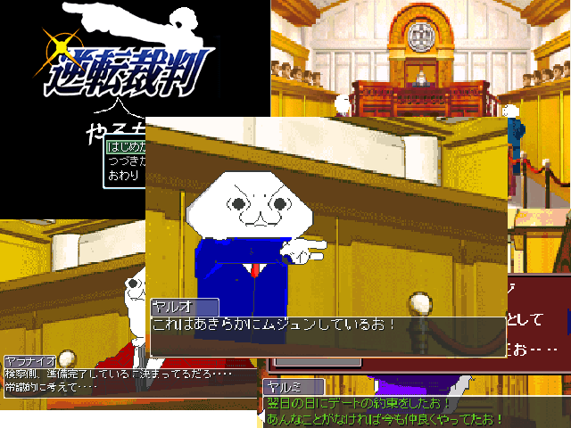

No.89
逆転やる夫裁判

| ジャンル： | 法廷バトル（アドベンチャー） |
| 推定プレイ時間： | 30分 |
| 使用ツクール | 2000（体験版） |
| 作者：ZeroMAX |
| ＿＿＿_ ／ ＼ ／ ─ ─＼ ／ （●） （●） ＼ | （__人__） | ＼＿＿＿＿＿＿＿_／ ＼ ｀ ⌒´ ,／ | | | ノ ＼ .| | | ／´ | | | | ｌ | | | ヽ -一ー_~、⌒)^),-、 | |_＿＿＿＿＿＿_| ヽ ＿＿＿＿,ノγ⌒ヽ)ニニ- ￣ | | | ＿＿＿_ ／ ＼ ／ ─ ─ ＼ ／ （●） （●） .＼ | （__人__） | ＿＿＿＿＿＿＿_ ＼ ｀ ⌒´ ,／ ..| | | ノ ＼ .| | | ／´ | | | | ｌ | | | ヽ -一ー_~、⌒)^),-、 | |_＿＿＿＿＿＿_| ヽ ＿＿＿＿,ノγ⌒ヽ)ニニ- ￣ | | | |
| 感想を書く |